根據官方在2020/01/29釋出消息來看，現在Windows 10也可以透過Google Coral USB Accelerator來運行EdgeTpu，消息來源可以參考
January 2020 Updates
Edge TPU runtime now available for Mac and Windows
January 29, 2020
此筆記以目前釋出版本資訊內容進行設置操作與範例運行。
在開始之前你需要先在下方連結
https://coral.ai/software/#edgetpu-python-api
下載好download edgetpu_runtime_*.zip並將檔案解壓縮完成
使用範例–>download edgetpu_runtime_20200128.zip
關於 tensorflow 1.15.2 來源可參考
https://pypi.org/project/tensorflow/1.15.2/#files
關於Anaconda部份，沒有要求一定需要，可自行決定是否使用。
開啟PowerShell切換到下載好並解壓縮出來的edgetpu_runtime資料夾目錄內，並執行以下指令進行安裝
.\install.bat
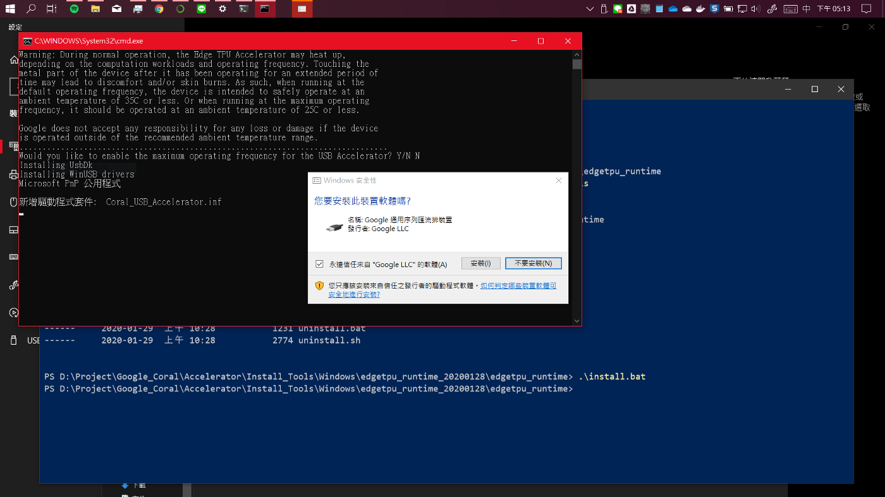
會出現是否安裝此裝置視窗訊息，點選安裝進行下一步，當看到以下畫面時，代表已經安裝完成。
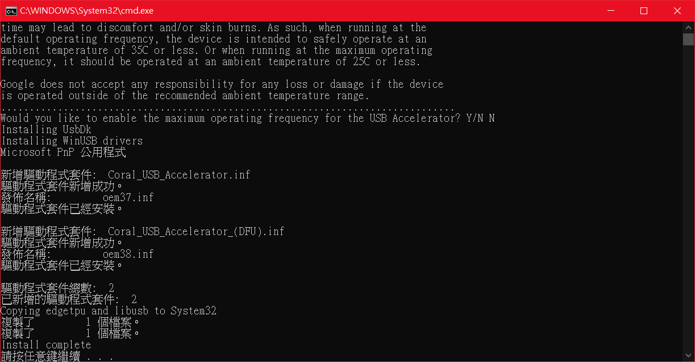
1. 開啟Anaconda Prompt
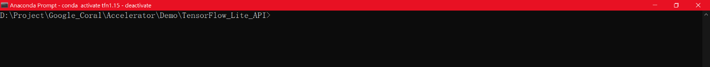
2. 建立虛擬環境
conda create -n test_tfn python=3.6
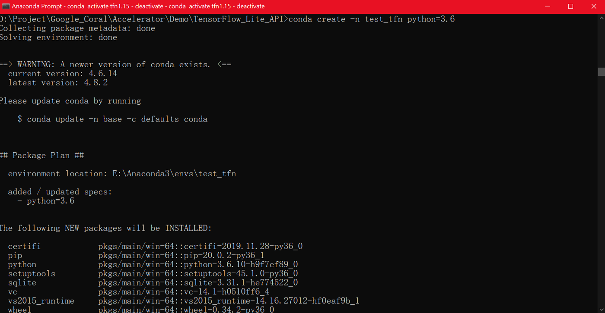
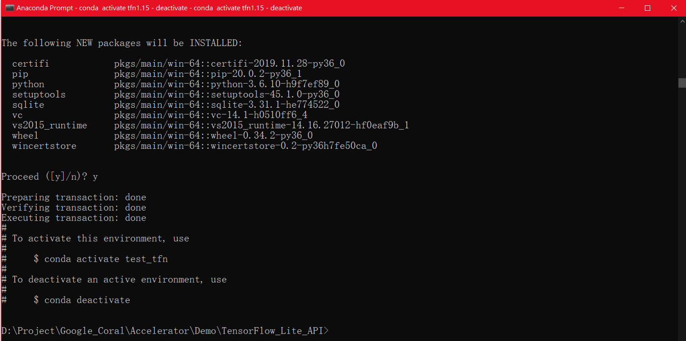
1. 進入虛擬環境
如果未使用Anaconda，請跳過此步驟
# Anaconda進入虛擬環境指令
conda activate test_tfn
# 如果要離開Anaconda虛擬環境，指令如下
conda deactivate
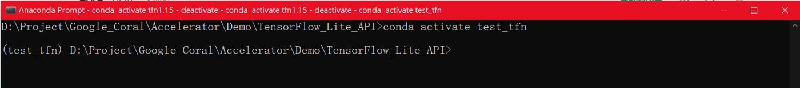
2. 進行環境安裝
安裝 tensorflow，版本使用1.15.2
pip install tensorflow==1.15.2
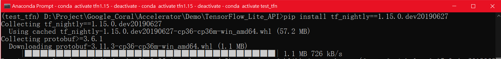
安裝 TensorFlow Lite interpreter
如果是使用TensorFlowLiteAPI來調用EdgeTPU執行，需要完成此步驟安裝，它的功能就跟EdgeTPU runtime是一樣，需要有它才能進行運作。
有關內容說明可以參考
Python quickstart — Install just the TensorFlow Lite interpreter
pip install https://dl.google.com/coral/python/tflite_runtime-2.1.0-cp36-cp36m-win_amd64.whl
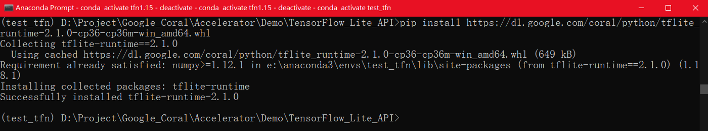
如果是使用 EdgeTPU API來調用EdgeTPU執行，需要完成此步驟安裝才能進行運作。
安裝連結可至以下連結內參考
Edge TPU Python API for Mac and Windows
pip install https://dl.google.com/coral/edgetpu_api/edgetpu-2.13.0-cp36-cp36m-win_amd64.whl
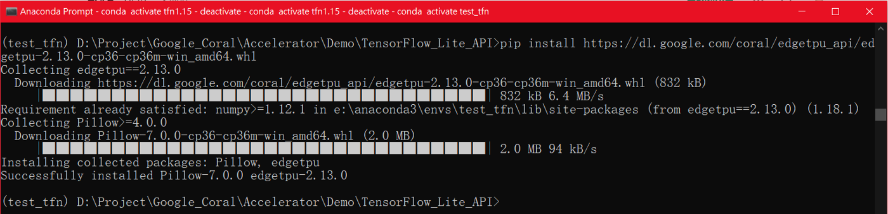
範例所使用模型與資料來源可參考以下連結取得
https://github.com/google-coral/edgetpu/tree/master/test_data
關於範例來源可參考
image classification example
python classify_image.py --model mobilenet_v2_1.0_224_inat_bird_quant_edgetpu.tflite --label inat_bird_labels.txt --input parrot.jpg
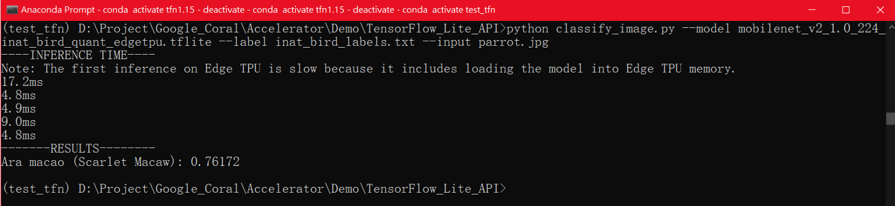
object detection example
python detect_image.py --model mobilenet_ssd_v2_coco_quant_postprocess_edgetpu.tflite --labels coco_labels.txt --input grace_hopper.bmp --output grace_hopper_processed.bmp
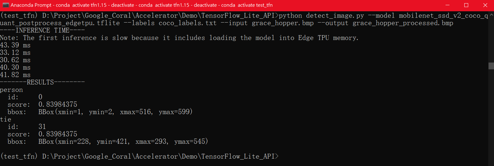
image classification example
python classify_image.py --model mobilenet_v2_1.0_224_inat_bird_quant_edgetpu.tflite --label inat_bird_labels.txt --image parrot.jpg
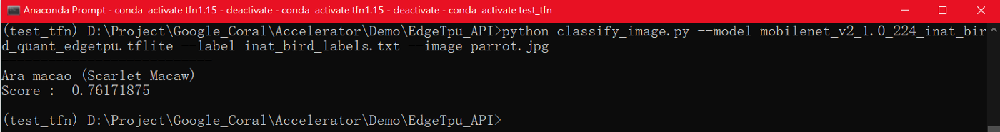
object detection example
python object_detection.py --model mobilenet_ssd_v2_face_quant_postprocess_edgetpu.tflite --input face.jpg --output detection_results.jpg
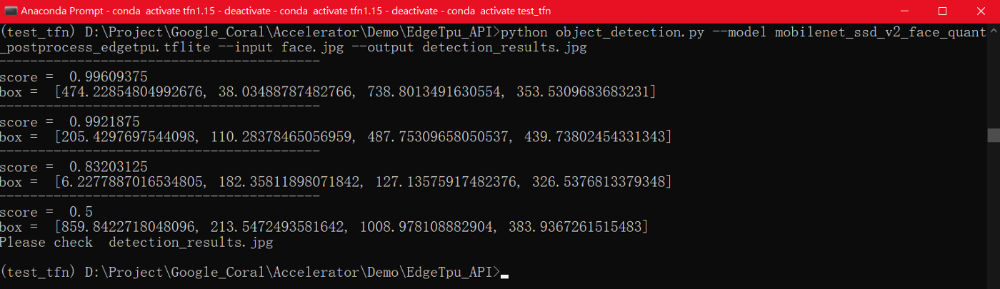